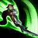
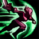
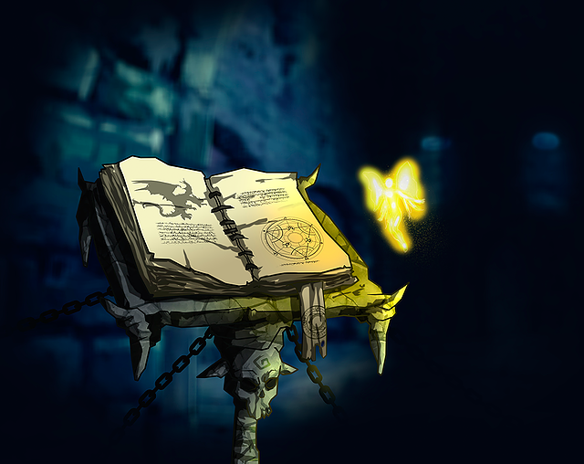

Character Sheet
Maker
About Me
Name: Riven Valerie
Age: 27
Gender: Woman
Sexuality: Bisssexual
Pronum: She/Her
Role: Witch/Doppelgänger
Stats & Items
HP: 15
AP (Ability Points): 30
Element Strike: Air
Weapon: Broken Sword - Valentia
Wand of Wisdom - Golden Feather
Story
Me chamo Riven, tenho 27 anos e estou à caminho de
Mystic Falls ouvi dizer que uma colega de infância estaria
por aqui.
Minha história só pode ser contada junto desta minha amiga
que eu não vejo anos, na verdade não eramos tão amigas...
diria algo a mais, mas quem sou eu para afirmar isso?
Assim como ela venho da Inglaterra, não somente com o foco
de deixar meu país para trás. E sim por boatos sobrenaturais.
Além do mais quem diria que a academia de polícia de Madeline serviria para algo?
Skills & Itens
Broken Wings

É um ataque que utiliza a sua espada Valentia,
Riven ganha um golpe adicional à cada inimigo acertado
se ela acertar 3 vezes uma pequena explosão em área e causada.
AP: 3 to 5
Cooldown: 15.5 sec (in ACT 4 turns)
Average

Riven recebe um escudo ao ativar essa técnica.
Após o escudo ser ativado a movimentação da mesma é
dobrada.
AP: 10
Cooldown: 5.0 sec (in ACT 2 turns)
Dynastia
Riven ganha um impulso para quaisquer direções que
queira seguir, logo em seguida se Average estiver ativo
uma aura aparecerá na espada assim causando um ataque
atordoante ao acertar um inimigo.
AP: 3 to 5
Cooldown: 7.0 sec (in ACT 3 turns)
Magnólia Folio

O folio de Magnólia é um livro de feitiços
completo ainda mais para a dona da Pena Dourada,
ele não pode ser utilizado em batalhas, mas pode ser estudado.
AP: 0
Cooldown: No cooldown.